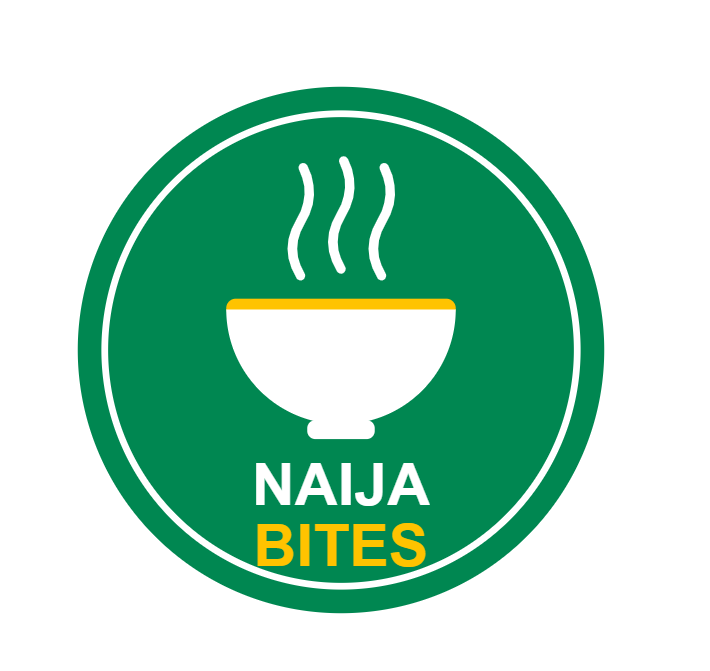

About Naija Bites
Our story ❤️
About Naija Bites Our story ❤️ Naija Bites is a family-run restaurant bringing you the rich, delicious taste of homemade Nigerian food. But before we were a restaurant, we were just a family kitchen — one small stove, a big pot, and recipes passed down from our grandmother, who believed that food should always be made with patience, fresh ingredients, and a whole lot of love. What started as cooking for neighbours, friends, and every child on the street who could smell Sunday rice from three houses away slowly grew into something bigger. People kept coming back — not just for the food, but for the feeling. The laughter, the chatter, the sound of highlife music playing in the background, and that first spoonful of smoky party jollof that makes you close your eyes and smile. That feeling is what Naija Bites is all about. Every dish we serve is prepared fresh daily — never rushed, never cut short. Our peppers are ground by hand, our soups are simmered slowly until the flavours truly wake up, and our snacks are fried in small batches so they're always hot and crunchy. From pepper soup that warms the soul on a rainy evening, to puff puff so soft it disappears before it reaches the table, everything is made the way it would be made at home — because for us, this is home. We're proud to serve our community every single day, and even prouder when we hear "this tastes just like my mother's cooking." That's the compliment we work for. Whether you're craving a quick snack on your lunch break, a hearty meal shared with friends, or a chilled cup of zobo while you catch up on life, there's always a seat — and a smile — waiting for you at Naija Bites. Come hungry. Leave happy. 🇳🇬